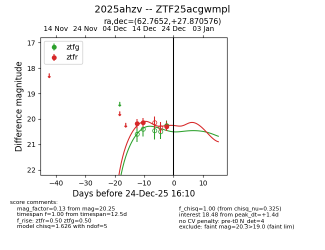
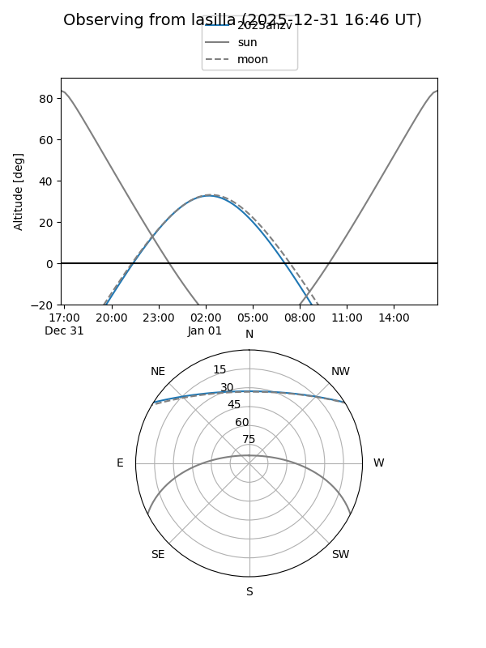
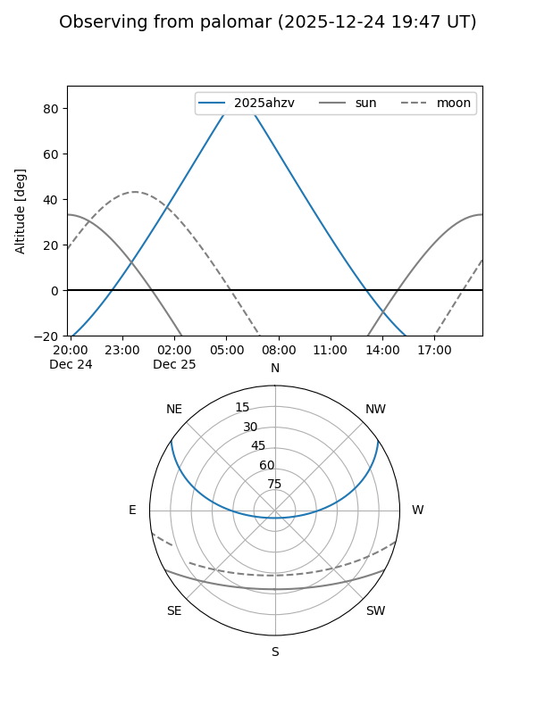
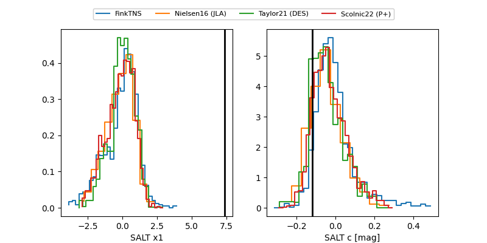

2025ahzv
Target 2025ahzv at 2025-12-22 23:01
Aliases and brokers:
FINK: fink-portal.org/ZTF25acgwmpl
Lasair: lasair-ztf.lsst.ac.uk/objects/ZTF25acgwmpl
ALeRCE: alerce.online/object/ZTF25acgwmpl
TNS: wis-tns.org/object/2025ahzv
YSE: ziggy.ucolick.org/yse/transient_detail/2025ahzv
alt names
ZTF25acgwmpl (ztf,fink_ztf)
2025ahzv (tns,yse)
Coordinates:
equatorial (ra, dec) = 62.7652,+27.87058
equatorial (HMS+DMS) = 04:11:03.65,+27:52:14.08
galactic (l, b) = (167.9571,-17.07034)
Flags:
Photometry:
last ztfg=20.25, ztfr=20.29
1 ztfg, 3 ztfr detections
Lightcurve

Visibility


Additional plots
